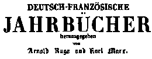

“the criticism of religion is the prerequisite of all criticism.” [Marx, Introduction to CHPR]
—— 1844 ——
“The entire movement of history, as simply communism's actual act of genesis — the birth act of its empirical existence — is, therefore, for its thinking consciousness the comprehended and known process of its becoming.” [Marx, Private Property and Communism, E&PM 1844]
Major Works
Comment on James Mill, Marx
ECONOMIC & PHILOSOPHIC MANUSCRIPTS OF 1844, Marx
On The Jewish Question, Marx
Introduction to Critique of Hegel's Philosophy of Right, Marx
Outlines of a Critique of Political Economy, Engels
Condition of England, Engels
“Religious suffering is, at one and the same time, the expression of real suffering and a protest against real suffering. Religion is the sigh of the oppressed creature, the heart of a heartless world, and the soul of soulless conditions. It is the opium of the people.”
[Marx, Introduction to Critique of Hegel’s Philosophy of Right]

Articles
“Let us suppose that we had carried out production as human beings. ...
Our products would be so many mirrors in which we saw reflected our essential nature.”
[Comment on James Mill]
Minor Works
Articles in Vorwärts!, Aug-Oct 1844, Marx & Engels
Letter to the Editor of the Allgemeine Zeitung (Augsburg), Marx
Critical Notes on "The King of Prussia and Social Reform", Marx
Latest Exercise in Cabinet Style of Frederick William IV, Marx
Hegel’s Construction of The Phenomenology, Marx
Plan for a Work on The Modern State, Marx
Engels
The Times on German Communism. To the New Moral World
French Communism. To the Editor of the New Moral World
Continental Movements
Continental Socialism
Rapid Progress of Communism in Germany
 |
Engels
The Press and the German Despots
Letter to the Editor of The Northern Star
The Situation in Prussia
News from Germany
Fate of a Traitor
Beer Riots in Bavaria
Parsonocracy in Prussia
News from St. Petersburg
The Civil War in the Valais
News from France
News from Prussia
Further Particulars of the Silesian Riots
Correspondence
Drafts and Fragments
Summary of Engels' Outlines of Critique of Political Economy, Marx
Preface to Volume 3 of MECW: Works of Marx & Engels, 1843-1844